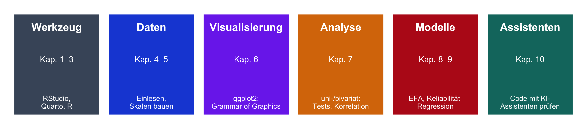
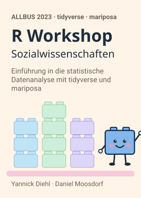

R Workshop – Sozialwissenschaften
Einführung in die statistische Datenanalyse mit tidyverse und mariposa
Eine Einführung in die statistische Datenanalyse mit R, tidyverse und mariposa für die Sozialwissenschaften — mit ALLBUS 2023.
0 Vorwort

„Alles, was existiert, ist ein Objekt. Alles, was passiert, ist ein Funktionsaufruf.“ nach John Chambers
Sind islamfeindliche Einstellungen in Ostdeutschland weiter verbreitet als im Westen? Wer trägt sie, und wie hängen sie mit politischen Orientierungen zusammen? Um solche Fragen mit Daten zu beantworten, brauchst du zwei Dinge: einen sauberen Datensatz wie den ALLBUS 2023 — und ein Werkzeug, das ihn auswerten kann. Dieses Buch ist eine Einführung in genau dieses Werkzeug: R für die statistische Datenanalyse in den Sozialwissenschaften. Es richtet sich an Studierende, die R neu kennenlernen — oft mit Vorerfahrung in SPSS — und einen einfachen, modernen Einstieg suchen.
Du arbeitest dich vom ersten Datenimport über deskriptive und inferenzstatistische Verfahren bis zu Faktorenanalyse und Regression. Dein Werkzeugkasten ist dabei bewusst klein gehalten: das tidyverse für Datenmanipulation und Visualisierung und das Marburger Paket mariposa für die statistische Analyse. Hinzu kommt Quarto als Brücke vom Code zum publizierten Bericht.
Anwendungsziel sind sozialwissenschaftliche Studien mit wissenschaftlichen Erhebungsstandards. Auch unstandardisierte Datensätze lassen sich mit denselben Techniken bearbeiten, und Survey-Gewichtung ist von Anfang an mit dabei.
Was du nach diesem Buch kannst
- Datensätze aus SPSS, Stata oder Excel einlesen und mit Labels und fehlenden Werten umgehen.
- Daten transformieren, rekodieren und Skalen aus Items bilden.
- Univariate, bivariate und multivariate Analysen durchführen — auch mit Survey-Gewichten.
- Korrelationen, Faktorenanalysen, lineare und logistische Regressionen rechnen und interpretieren.
- Befunde mit ggplot2 in publikationsfähige Grafiken bringen.
- Eine Analyse so dokumentieren, dass sie reproduzierbar ist.
- Mit KI-Assistenten R-Code schreiben und prüfen, ohne Forschungsdaten weiterzugeben.
Die Kapitel im Überblick
1
RStudio
- R und RStudio in der richtigen Reihenfolge installieren.
- Die Benutzeroberfläche von RStudio sicher bedienen.
Quarto und reproduzierbare Wissenschaft
- Den Unterschied zwischen R-Skript, R Markdown und Quarto erklären.
- Ein
.qmd-Dokument anlegen, rendern und in HTML/PDF/Word exportieren.
Programmiersprache R
- Variablen anlegen, benennen und Werte zuweisen.
- Code mit
#-Kommentaren für dein zukünftiges Ich verständlich halten.
Datenimport und Inspektion
- Einen SPSS-Datensatz mit
read_spss()einlesen — inklusive aller Variablen- und Wertelabels. - Variablen über Name oder Label mit
find_var()suchen.
Daten transformieren und Skalen bilden
- Neue Variablen mit
mutate()erzeugen. - Mit
case_when(),recode_values()undif_else()Bedingungslogik schreiben.
Visualisierung — Grundlagen
- Den Grammar-of-Graphics-Ansatz von ggplot2 erklären.
- Häufigkeiten, Verteilungen und Zusammenhänge mit den passenden
geom_*()-Schichten visualisieren.
Uni- und Bivariate Analyse
- Häufigkeitsverteilungen einer Variable berichten — gewichtet und ungewichtet.
- Mittelwert, Median, Streuung, IQR, Schiefe, Wölbung und Standardfehler bestimmen.
Latente Strukturen
- Eine Inter-Item-Korrelationsmatrix aufstellen, lesen und als Heatmap mit ggplot2 visualisieren.
- KMO und Bartlett-Test als Voraussetzungs-Check verstehen und im
efa()-Output finden.
Erklärungsmodelle
- Eine einfache lineare Regression mit einem Prädiktor rechnen, die Regressionsgerade aus den Modell-Koeffizienten händisch in ein Streudiagramm zeichnen (
geom_abline()) und die OLS-Logik („kleinste Quadrate") nachvollziehen. - Eine multiple lineare Regression rechnen, gewichten und interpretieren — Koeffizienten, Beta, R², Modell-F.
Mit KI-Assistenten arbeiten
- Erklären, warum ein KI-Assistent bei mariposa Funktionen und Argumente erfinden kann.
- Eine Anfrage mit Kontext stellen: Ziel, Paketversionen, Dokumentation, Variablen und Fehlermeldung.
Wie liest du dieses Buch?
- Linear lesen. Die Kapitel bauen aufeinander auf. Kap. 3 setzt die Grundlagen aus Kap. 1–2 voraus, alle Methoden-Kapitel ab Kap. 7 setzen die Datenpräp aus Kap. 4–5 voraus, und die Visualisierungs-Grundlagen aus Kap. 6 werden von Kap. 7 bis 9 durchgehend genutzt.
- Code mitlaufen lassen. Halte RStudio parallel offen und kopiere die Chunks in dein Quarto-Dokument. Copy-and-paste ist ausdrücklich erwünscht.
- Übungen ernst nehmen. Jedes Kapitel endet mit vier Aufgaben — zwei reine Reproduktionen, eine Transfer-Aufgabe und eine Mini-Forschungsfrage ohne Musterlösung. Wenn du die Mini-Forschungsfragen über die Methoden-Kapitel hinweg konsistent auf einer eigenen Frage anwendest, entsteht parallel zur ALLBUS-Hauptstudie ein eigenes kleines Forschungsprojekt. Versuche jede Übung zuerst selbst.
- Datensatz früh besorgen. Den ALLBUS 2023 brauchst du ab Kap. 4 — wie du an die Daten kommst, steht unter Beispieldatensatz.
Eine kurze Roadmap durch die sechs Etappen:
Warum R?
- R ist eine Programmiersprache, die speziell für statistische Berechnungen und Visualisierungen von Daten entwickelt wurde.
- R ist Open Source: keine Lizenzkosten, auch nicht für die Erweiterungspakete.
- Daten lassen sich sehr flexibel auswerten und visualisieren — kleine Datenanalysen und große Pipelines folgen demselben Code-Stil.
- Wissenschaftliche Organisationen, Unternehmen und Behörden setzen R weltweit ein. Wer R lernt, lernt eine Sprache, die in der Praxis gefragt ist.
- R lässt sich plattformunabhängig in beliebige IT-Strukturen integrieren.
Warum tidyverse und mariposa?
Statt einer langen Liste von Spezialpaketen arbeiten wir mit dem Ökosystem tidyverse und dem Paket mariposa.
Tidyverse. Eine Sammlung aufeinander abgestimmter Pakete (dplyr, tidyr, ggplot2, readr, purrr, tibble, stringr, forcats, lubridate), die einen gemeinsamen Stil für Datenmanipulation und Visualisierung definieren. Wer das tidyverse einmal verstanden hat, kann fast alle modernen R-Skripte lesen.
mariposa. Ein in Marburg entwickeltes Paket (Marburg Initiative for Political and Social Analysis), das die für sozialwissenschaftliche Analysen typischen Verfahren in einer konsistenten, tidyverse-nahen Syntax bereitstellt: Datenimport aus SPSS, Umgang mit Labels und Missing-Werten, deskriptive Statistik, t-Tests, ANOVA, Korrelation, Faktorenanalyse, Regression. Die Ausgaben folgen den Tabellen-Layouts von SPSS — wer aus SPSS umsteigt, erkennt sie wieder —, und die Ergebnisse werden gegen Referenz-Output von SPSS Statistics 29 geprüft. Welche Funktion wie weit verglichen ist, steht in der mariposa-Vignette „SPSS Compatibility”.
Voraussetzungen
R (Programmiersprache, Open Source). Die jeweils aktuelle Version findest du unter cran.r-project.org. Dieses Buch setzt mindestens R 4.3 voraus; empfohlen ist R 4.5 oder höher, damit alle hier gezeigten Funktionen ohne Anpassungen laufen.
RStudio als integrierte Entwicklungsumgebung (IDE). Die IDE selbst heißt weiterhin RStudio, die Firma dahinter heißt seit 2022 Posit. Du brauchst die Desktop-Version: posit.co/download/rstudio-desktop. Wenn du lokal nichts installieren möchtest, kannst du alternativ Posit Cloud (vormals RStudio Cloud) im Browser nutzen.
Pakete. Wir installieren am Anfang einmal das Ökosystem tidyverse und das Paket mariposa, die uns durch das ganze Buch tragen — beide liegen auf CRAN, dem offiziellen R-Paketarchiv:
install.packages("tidyverse")
install.packages("mariposa")Dieses Buch ist mit mariposa 0.7.4 gerendert. Welche Version du selbst hast, zeigt dir packageVersion("mariposa") — ältere Versionen (vor 0.7.4) liefern an einigen Stellen andere Ausgaben oder kennen einzelne Argumente noch nicht.
Aktivierung in jeder R-Sitzung:
Für die Grafik-Komposition in Kap. 9 kommt später noch patchwork dazu, und für die konfirmatorische Faktorenanalyse in Kap. 8 fügen wir lavaan und semPlot hinzu — die einzigen weiteren Pakete, die wir bewusst zulassen.
Beispieldatensatz: ALLBUS 2023
Wir arbeiten durchgehend mit dem ALLBUS — der Allgemeinen Bevölkerungsumfrage der Sozialwissenschaften. Die Beispiele stammen aus der Welle 2023 mit 5246 Befragten und 579 Variablen.
So kommst du an die Daten. Den Datensatz „ALLBUScompact 2023“ findest du im GESIS-Datenbestandskatalog unter der Studiennummer ZA8831. Du brauchst einen kostenlosen GESIS-Account; nach der Registrierung kannst du die SPSS-Version herunterladen. Speichere die Datei in deinem Projektordner als ALLBUS2023.sav.
Als roten Faden durch die Methoden-Kapitel verwenden wir die Frage:
Wer trägt islamfeindliche Einstellungen in Deutschland 2023, und wie hängen sie mit politischen Orientierungen und Soziostruktur zusammen?
Die Frage ist nicht zufällig gewählt — sie zieht sich durch jedes Kapitel:
- Kap. 4 — Datenimport und Inspektion. Du liest den ALLBUS ein, findest Variablen über
find_var(), deklarierst fehlende Werte und legst dein Analyse-Subset an. - Kap. 5 — Daten transformieren und Skalen bilden. Aus sechs ALLBUS-Items baust du eine Islamfeindlichkeits-Skala und parallel eine Populismus-Skala — inklusive sauberem Umpolen, Mindest-Validität und POMPS-Vergleichbarkeit.
- Kap. 6 — Visualisierung Grundlagen. Du lernst die Grammar of Graphics von ggplot2 kennen — die Werkzeuge, mit denen du in den folgenden Kapiteln jede Methode begleitend illustrierst.
- Kap. 7 — Uni- und bivariate Analyse. Du beschreibst die Verteilung der Skala, vergleichst Ost und West, prüfst den Zusammenhang mit Populismus.
- Kap. 8 — Latente Strukturen. Du prüfst die Faktorstruktur und Reliabilität der Skalen mit EFA, Cronbachs α und einem CFA-Ausblick.
- Kap. 9 — Erklärungsmodelle. Du fragst, welche Merkmale (Bildung, Alter, Region, Populismus) Islamfeindlichkeit am besten erklären — multifaktorielle ANOVA, multiple und logistische Regression — und kommunizierst die Ergebnisse als publikationsfähigen Coefficient-Plot mit
patchwork. - Kap. 10 — Mit KI-Assistenten arbeiten. Du lässt dir bei weiteren Schritten deiner Analyse von einem Assistenten helfen und prüfst seine Vorschläge. Die ALLBUS-Daten bekommt er dabei nicht zu sehen.
So lernst du nicht nur einzelne Methoden, sondern siehst, wie sie zu einer kompletten Analyse zusammenfließen.
So sind die Kapitel gebaut
Jedes Methoden-Kapitel folgt demselben Aufbau: eine Frage wird in Code beantwortet, der Output bekommt eine Lesart. Die Kapitel bestehen zu großen Teilen aus R-Code in sogenannten Code-Chunks:
allbus |> describe(islamophobie, weights = wghtpew)Das Ergebnis erscheint direkt darunter, gerendert ins Buch. Den Code kannst du jederzeit in dein eigenes Quarto-Dokument übernehmen — Copy-and-paste ist ausdrücklich erwünscht.
Pipe-Operator. Du wirst durchgehend den nativen Pipe |> sehen. Er reicht das Ergebnis einer Funktion in die nächste weiter und macht aus verschachteltem Code einen lesbaren Arbeitsfluss:
In älterem Code findest du oft %>% (aus dem Paket magrittr). Beide tun fast dasselbe; wir erklären den Unterschied kurz in Kap. 3.
Kästen. Vier Arten von Kästen kehren im Buch wieder. Zwei davon stehen immer offen, weil du sie an genau der Stelle brauchst:
Tipp
SPSS → R. Direkte Übersetzungshilfe für Umsteiger:innen — der SPSS-Befehl und sein R-Pendant.
Der zweite offene Kasten warnt vor Fehlern, die man leicht macht und spät bemerkt:
Warnung
Vorsicht. Typische Fallstricke und Stolpersteine.
Die anderen beiden sind Zusatzwissen und deshalb zugeklappt. Für den nächsten Schritt im Kapitel brauchst du sie nicht; ein Klick auf die Zeile öffnet sie:
HinweisHintergrund: Theorie hinter einer Methode
Kurze Einschübe, die erklären, warum eine Methode so funktioniert, woher eine Skala stammt oder was in einen Methodenbericht gehört.
Zugeklappt sind auch die Hinweise auf Abkürzungen, die mariposa anbietet:
Wichtigmariposa-Tipp: kompaktere Lösungen
Stellen, an denen mariposa eine besonders kompakte Lösung anbietet.
Weiterführende Literatur
Wenn du tiefer einsteigen möchtest:
- Hadley Wickham, Mine Çetinkaya-Rundel & Garrett Grolemund, R for Data Science (2. Auflage) — das Standardwerk für das tidyverse, frei online.
- Hadley Wickham, Advanced R — für alle, die R als Programmiersprache verstehen wollen.
- mariposa-Dokumentation: yannickdiehl.github.io/mariposa — Funktionsreferenz und Vignetten.
- Posit, Quarto-Dokumentation — Referenz für Bücher, Berichte und Seminararbeiten mit Quarto (siehe Kap. 2).
Tastenkürzel auf einen Blick
Diese Tastenkürzel brauchst du in RStudio am häufigsten. Wann welches Kürzel nützt, erklärt Kap. 1 im Abschnitt Nützliche Tastenbefehle.
| Wofür | macOS | Windows |
|---|---|---|
| Aktuelle Zeile ausführen |
cmd + Enter
|
strg + Enter
|
| Ganzen Chunk ausführen |
cmd + shift + Enter
|
strg + shift + Enter
|
| Alle Chunks ausführen |
cmd + option + R
|
strg + alt + R
|
| Neuen Chunk einfügen |
cmd + option + I
|
strg + alt + I
|
| Dokument rendern |
cmd + shift + K
|
strg + shift + K
|
| Speichern |
cmd + S
|
strg + S
|
Zuweisungspfeil <-
|
option + -
|
alt + -
|
Pipe |>
|
cmd + shift + M
|
strg + shift + M
|
| Zeile auskommentieren und zurück |
cmd + shift + C
|
strg + shift + C
|
| Code einrücken und aufräumen |
cmd + shift + A
|
strg + shift + A
|
| Konsole leeren |
control + L
|
strg + L
|
| Frühere Befehle in der Konsole |
cmd + ↑
|
strg + ↑
|
| Hilfe zur Funktion unter dem Cursor | F1 |
F1 |
| Alle Tastenkürzel anzeigen |
option + shift + K
|
alt + shift + K
|
Das Kürzel für die Pipe setzt |> nur, wenn unter Tools → Global Options → Code die Option Use native pipe operator angehakt ist. Sonst erscheint der ältere Pipe %>%.